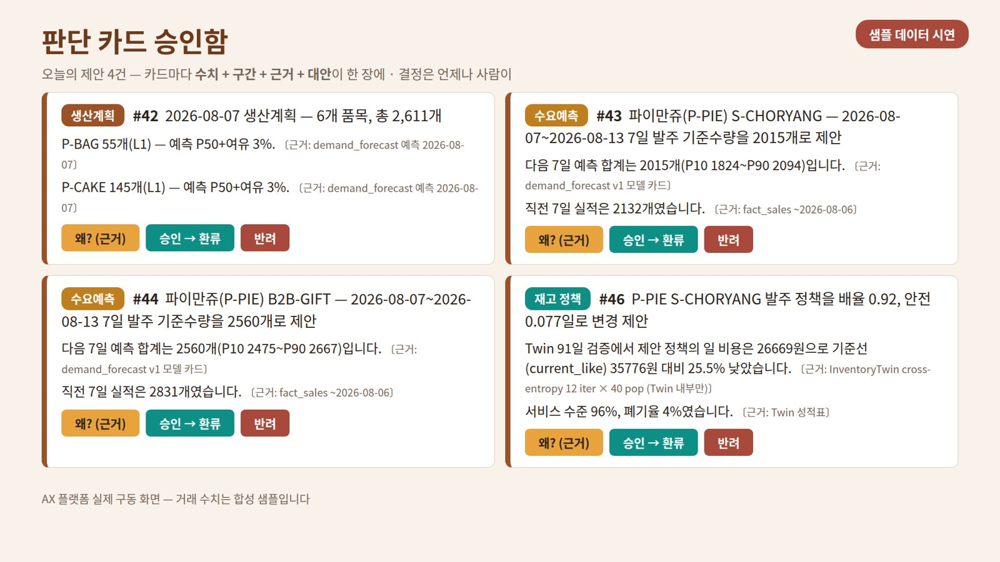
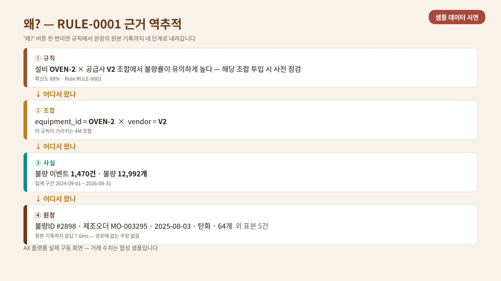
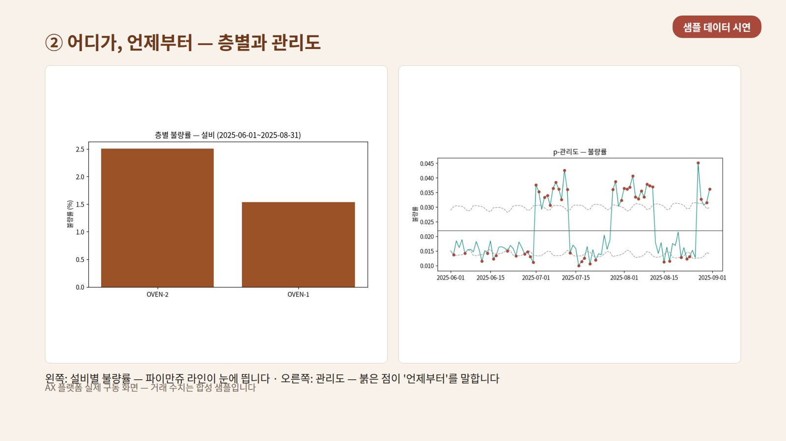
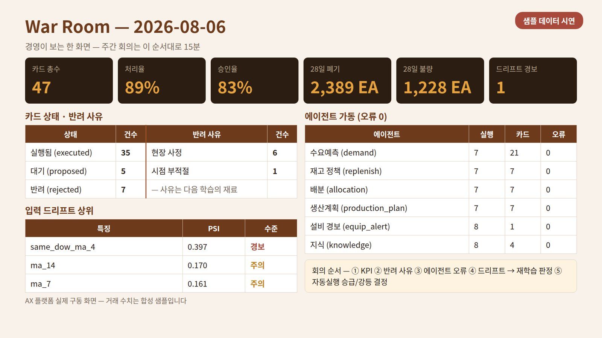

판매·생산·재고 데이터를 하나의 표준 체계로 모으고, AI가 수치·구간·근거·대안이 담긴 판단 카드를 올리면, 최종 결정은 언제나 사람이 합니다. 승인 순간에만 시스템 값이 바뀌고, 전 과정이 감사 기록으로 남습니다.
본 사이트의 화면은 전부 실제 구동 화면입니다 — 거래 수치는 고객사 구조로 만든 합성 샘플이며, 실데이터 연결 즉시 같은 화면이 실제로 돕니다.
엑셀과 감(感)으로 돌아가는 발주·생산의 비용은 결품과 폐기로 동시에 청구됩니다.
POS·엑셀·수기 장부·ERP가 제각각. "본점 만쥬"와 "초량점 파이만쥬"가 다른 상품으로 집계되는 순간 분석은 무너집니다.
근거 없는 예측 숫자는 결재할 수 없습니다. 현장이 묻는 것은 하나 — "왜 이 숫자인가?" 답 못 하는 시스템은 쓰이지 않습니다.
컨설팅이 끝나면 시스템도 끝나는 경험. 운영 절차와 인수인계 없는 도입은 비용이지 자산이 아닙니다.
Odoo(오픈소스 ERP)를 정본으로, 수집부터 승인·환류까지 한 몸으로 움직입니다.
시스템 값은 승인 순간에만 바뀝니다. 급해도 승인함을 건너뛰는 지름길은 없습니다 — 그것이 안전장치입니다.
모든 문장에 〔근거〕 표기, '왜?' 버튼 한 번이면 원본 데이터까지 역추적됩니다.
격리 큐 우회 · 무승인 파라미터 변경 · 무게이트 외부 전송은 코드가 막습니다. 자료는 자산 대장에 등록되고 반출이 통제됩니다.
목업이 아닙니다 — 아래 화면은 전 구간이 실제로 돌아간 결과입니다. 거래 수치만 합성 샘플입니다.




제빵업체 구조의 합성 데이터(24개월 판매 2만여 건·생산 7천여 건)로 수집→표준화→학습→판단→환류 전체를 완주한 결과입니다.
전 품목 빅뱅이 아니라, 주력 품목 하나의 수요예측·발주를 끝까지 완주하고 넓힙니다.
Odoo/엑셀 연결, 현장 어휘 30분 워크숍, 데이터 헌장(귀속·통제·약정·반환) 서명
데이터 표준화와 품질 게이트, 현장 장부의 태블릿 전환(1개 라인)
수요예측 학습, 현행 발주 대비 정확도 비교 보고 — 여기서 계속 여부를 판단하셔도 됩니다
발주 제안 카드 시범 운영, 첫 실제 승인·환류, 운영 매뉴얼 인수인계
Odoo 기반 지능형 ERP 구축 전문 — 도입으로 끝나지 않고 인수인계로 끝냅니다.
에이에스씨는 오픈소스 ERP Odoo와 AI를 결합한 지능형 운영 체계를 설계·구축합니다. 저희의 원칙은 단순합니다 — 고객 자료는 고객 자산(전 산출물 귀속·반출 통제·종료 시 반환), 근거 없는 숫자는 내놓지 않으며, 프로젝트의 완료 기준은 납품이 아니라 고객이 스스로 운영하는 것입니다.
도입 후에는 스튜어드 하루 30분 + 승인자 하루 20분으로 운영되도록 운영 매뉴얼과 검수 절차(재학습·승인·백업 복구의 단독 수행)까지 함께 넘겨 드립니다.
대표 이형근의 저서. 이 사이트의 플랫폼은 책에서 제시한 방법론(판단의 공장, 근거 강제, 사람의 승인)을 실제 코드로 구현한 것입니다.
브라우저 데모를 넘어, 실제 운영 웹앱(승인함·격리 큐·브리핑·질문)에 로그인해 합성 데이터로 전 기능을 체험할 수 있습니다. 원하시면 귀사 엑셀·POS 정산 파일을 직접 올려 귀사 데이터 기준 브리핑도 받아 보실 수 있습니다.
귀사의 매장·제품 구조에 맞춘 샘플 데모를 준비해 드립니다. 지금 쓰시는 엑셀 그대로 두 가지만 주시면 4주 안에 실데이터 검증 성적표를 보실 수 있습니다.
asclhg@gmail.com 으로 문의하기